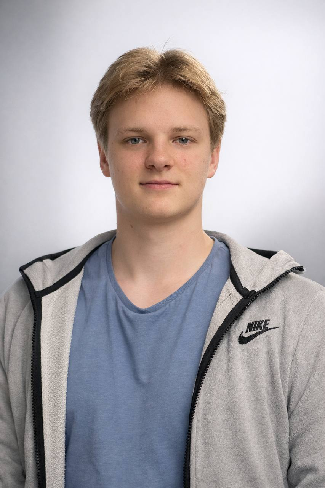

Thoughtful solutions
I break complex problems into clear, practical steps.
Hello, I'm Ivan Todosiuk
I build thoughtful web experiences and explore the systems behind them — from clean interfaces to backend logic, Linux and application security.

About me
I started exploring programming at 11. Today, I approach technology with more purpose — learning by building and turning ideas into useful digital products.
My path began with frontend development and expanded into Linux, Bash, networking and application security. That broader view helps me understand both what people see and the technology working behind it.
I am currently focused on growing as a web developer and learning React, Node.js and Java to create more complete, modern applications.
I break complex problems into clear, practical steps.
Speed, accessibility and usability shape every decision.
Each project is a chance to learn a better way to build.
Selected work
A collection of practical projects across web development and cybersecurity.
A beginner-friendly challenge for exploring login security and brute-force concepts in a controlled, safe environment.
Explore project ↗An informational website about circular economy and reuse initiatives in Hamar.
Visit website ↗A compact card game where players find matching pairs and train their visual focus.
View on GitHub ↗Capabilities
A growing toolkit shaped by hands-on projects and continuous learning.
Building responsive, clear interfaces with attention to structure and detail.
Learning application logic, APIs and data-driven experiences.
Working with Linux, Bash, networking fundamentals and system basics.
Expanding into component-based development and full-stack workflows.
Beyond the screen
Experience with authorized, non-destructive security analysis gives me a broader understanding of how systems behave in real-world environments.
Mechanical lock analysis
RFID / NFC fundamentals
Access control assessment
Let's work together
I'm open to new projects, collaborations and conversations about web development.